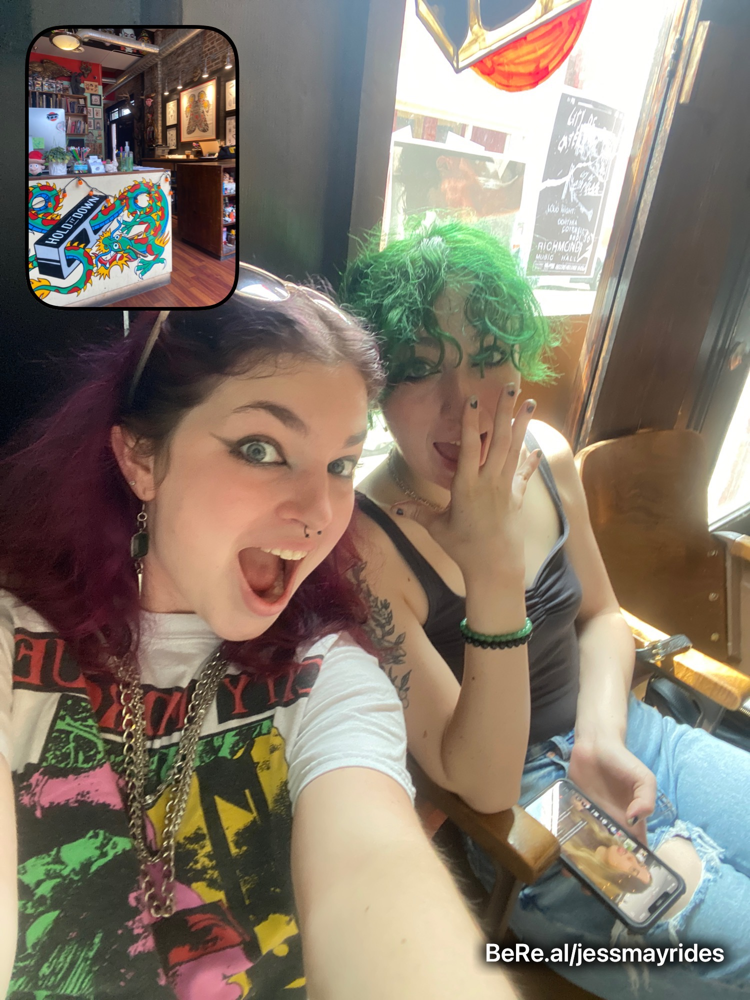
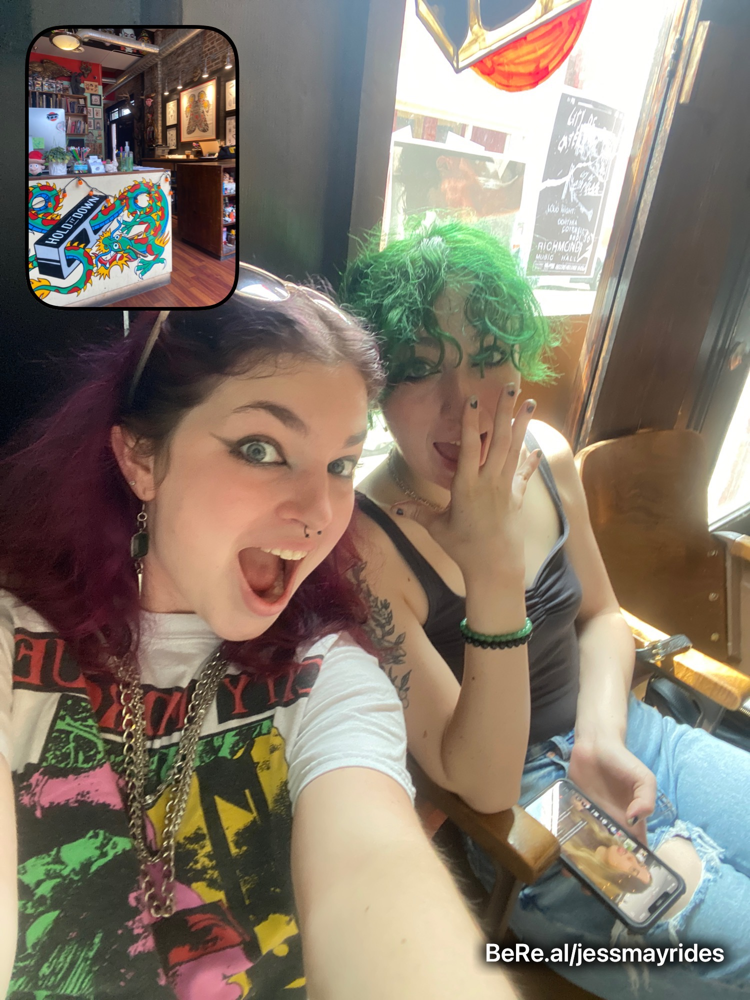

2020
Fall 2020-Spring 2021 was my freshman year of college. Honestly, it was probably the worst year of my life. I went through several emotional hardships; was stuck in my dorm all year because of COVID; and honestly was a little lost. I persevered and learned a lot from that year, however, and it truly was a catalyst for personal transformation.
I also made the terrible decision to get bangs. Needless to say, that phase didn't last long.

 
